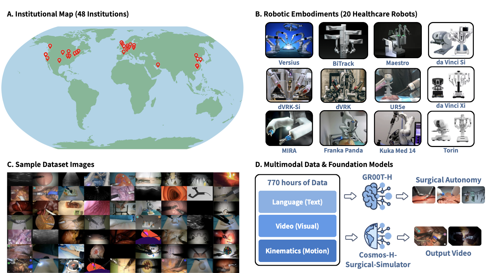
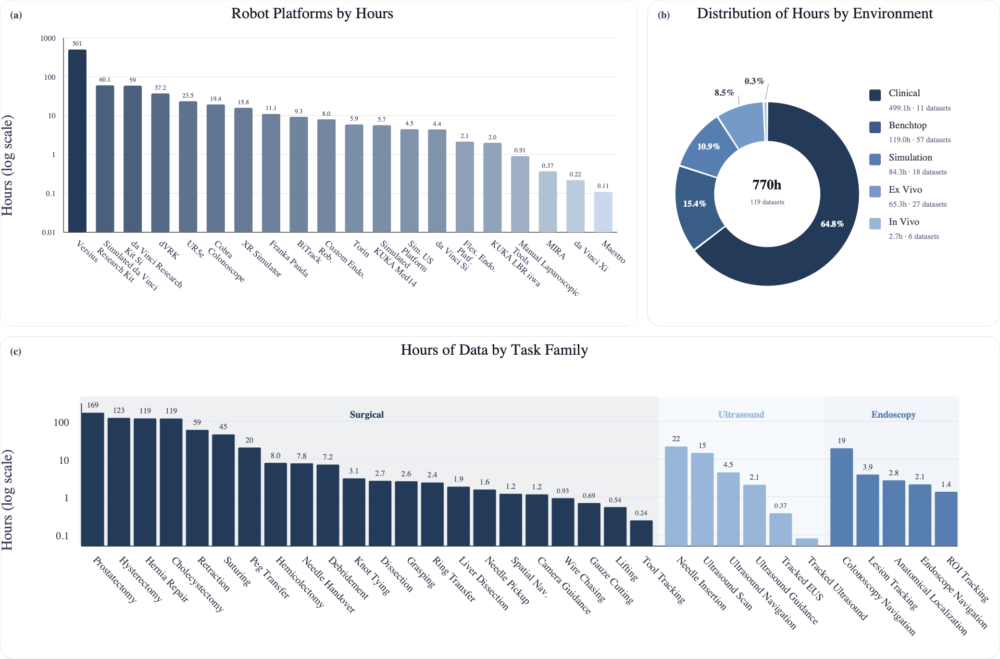
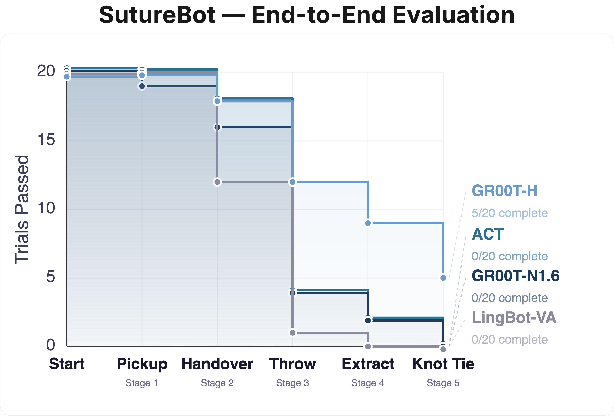
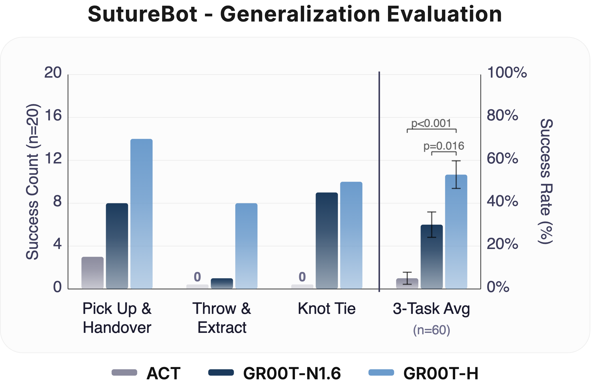
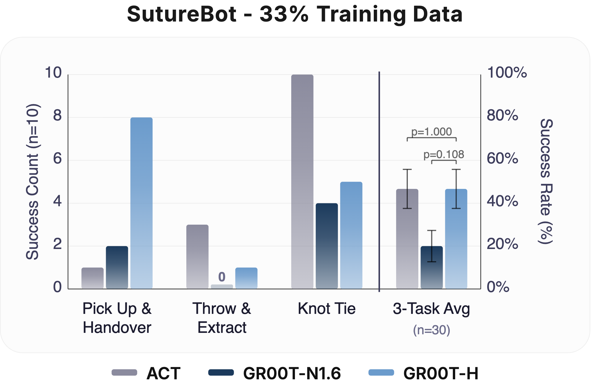
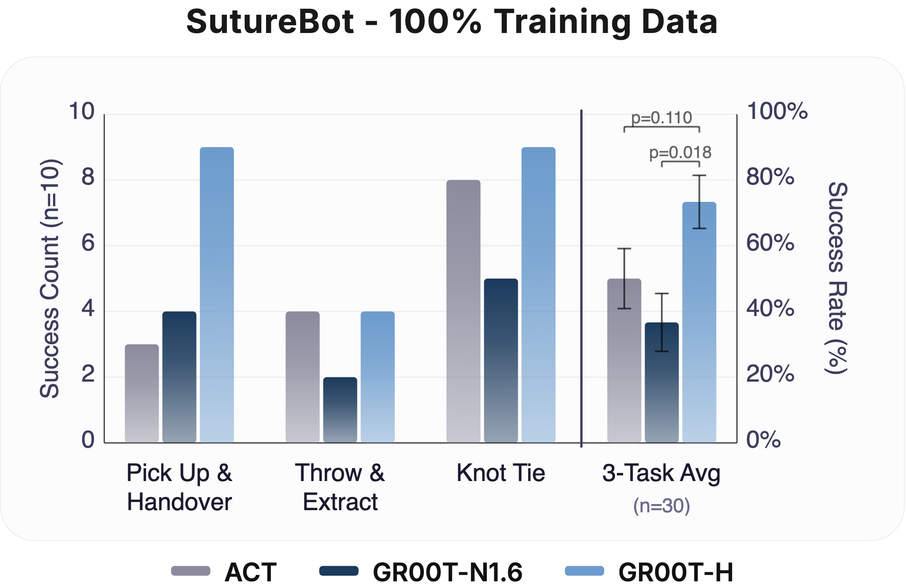
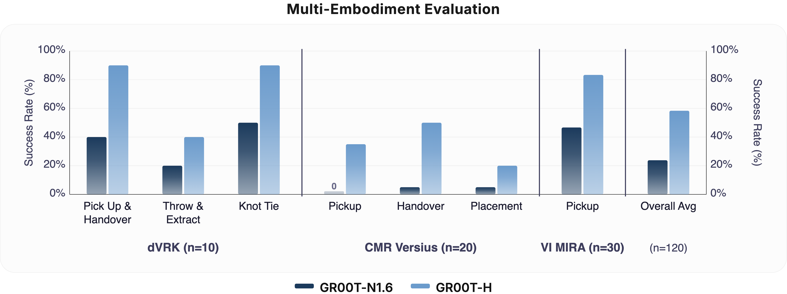
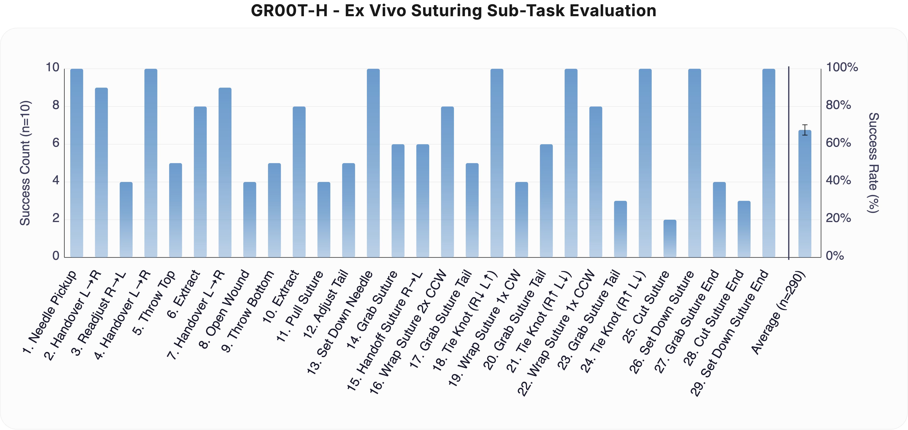
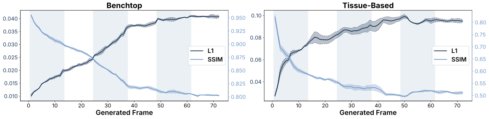

Open-H-Embodiment
A Large-Scale Dataset for Enabling Foundation Models in Medical Robotics
Abstract
Autonomous medical robots hold promise in improving patient outcomes by reducing provider fatigue and workload, democratizing access to surgical care, and enabling super-human precision. However, progress in autonomous medical robotics has been limited by a fundamental data problem: existing robot demonstration datasets are small, collected on single platforms, and rarely shared openly, restricting not just policy learning but the broader ecosystem of foundation models, simulation tools, and benchmarks that the field needs to advance.
We introduce Open-H-Embodiment, the first large-scale, multi-institution, multi-robot open dataset for medical robot learning, comprising synchronized video and kinematics collected across more than 48 institutions and multiple robotic platforms including the CMR Versius, Intuitive Surgical's da Vinci, da Vinci Research Kit (dVRK), Rob Surgical BiTrack, Virtual Incision's MIRA, Moon Surgical Maestro, and a variety of custom systems, spanning surgical manipulation, robotic ultrasound, and endoscopy procedures.
We demonstrate the breadth of research enabled by this dataset through two foundation models. We train GR00T-H, the first open foundation vision-language-action model for medical robotics, which is the only evaluated model to achieve full end-to-end task completion on a structured suturing benchmark (25% of trials vs. 0% for all baselines) and achieves 65% average success across a 29-step ex vivo suturing sequence on skin-on pork belly. We also train Cosmos-H-Surgical-Simulator, the first kinematic action-conditioned world model to enable multi-embodiment surgical simulation from a single checkpoint, spanning nine robotic platforms and supporting in-silico policy evaluation and synthetic data generation for the surgical domain.
Open-H-Embodiment Overview

Figure 1: (A) Geographic distribution of the 48 participating institutions across North America, Europe, the Middle East, and Asia. (B) The 20 healthcare robotic platforms represented in the dataset, spanning surgical systems (da Vinci Si, da Vinci Xi, dVRK, dVRK-Si, MIRA, Versius, BiTrack, Maestro, Torin), general-purpose manipulators adapted for clinical use (Franka Panda, UR5e, Kuka Med 14), and emerging platforms. (C) Representative frames from the dataset illustrating the diversity of tasks, viewpoints, and tissue types covered, including robotic surgery, robotic ultrasound, and related healthcare manipulation tasks. (D) The dataset comprises 770 hours of synchronized multimodal demonstrations spanning language annotations, video observations, and kinematic trajectories. This corpus supports two downstream directions: training GR00T-H, a healthcare-focused vision-language-action model targeting surgical autonomy, and training Cosmos-H-Surgical-Simulator, a multi-embodiment, action-conditioned world model for surgical scene synthesis.
Dataset Composition

Figure 2: (a) Dataset hours by robot platform. (b) Distribution of dataset hours by environment type. (c) Distribution of dataset hours across task families. Together, these panels summarize the current distribution of contributed data across embodiments, collection environments, and task families in Open-H-Embodiment.
Experiment Results


End-to-End Suturing & OOD Generalization: Left: Task survival for GR00T-H on the SutureBot end-to-end suturing task compared to GR00T-N1.6, ACT, and LingBot-VA. GR00T-H improves end-to-end performance with long-horizon success rate of 25%, showing better handling of compounding errors. Right: Out-of-distribution evaluation on SutureBot with an unseen wound configuration under varied lighting (n = 20 per subtask). GR00T-H achieves a 3-task average of 54%, outperforming GR00T-N1.6 (30%) and ACT (5%). Clopper-Pearson 95% confidence intervals are represented as error bars.


Data Efficiency (33% & 100%): Task success rate at 33% and 100% fine-tuning data on SutureBot (n = 10 per subtask). At 33% data, GR00T-H matches ACT while GR00T-N1.6 underperforms both. At 100% data, GR00T-H outperforms all baselines, indicating that Open-H post-training enables both data-efficient learning and stronger scaling. Clopper-Pearson 95% confidence intervals are represented as error bars.

Multi-Embodiment Performance Comparison. Evaluation of the GR00T-H foundational VLA (post-trained on Open-H) versus the GR00T-N1.6 base policy across three surgical platforms: the da Vinci Research Kit Si (dVRK-Si), CMR Versius, and Virtual Incision MIRA. GR00T-H demonstrates significant performance gains across all robot embodiments and sub-tasks, with the overall average success rate showing a statistically significant improvement (p < 0.001). Error bars represent the Clopper-Pearson 95% confidence intervals across trials.

Ex Vivo Suturing: GR00T-H ex vivo suturing evaluation across 29 subtasks (n = 10 per subtask, n = 290 total). Tasks span needle manipulation, wound opening, suture passing, knot tying, and suture cutting. GR00T-H achieves an average success rate of ≈65%, with near-perfect performance on structured manipulation primitives and lower success on fine-contact and cutting steps. The rightmost bar shows the overall average across all subtasks. Clopper-Pearson 95% confidence intervals are represented as error bars.

Cosmos-H-S-S Evaluation: Quantitative evaluation of Cosmos-H-Surgical-Simulator. Per-frame L1 and SSIM for benchtop vs. tissue-based datasets. Mean L1 error and SSIM as a function of generated frame index across 72 autoregressively generated frames (6 chunks × 12 frames each). Mean over 3 generation seeds, each averaged across all evaluated episodes within the category; shaded bands indicate 1 standard deviation across seeds. Left: benchtop datasets (phantom and bench procedures). Right: tissue-based datasets (clinical, cadaver, and ex vivo tissue).
Video Demonstrations
End-to-end autonomous suturing demonstration with GR00T-H.
Example rollout from GR00T-H on the CMR Versius peg transfer task.
Example inference run with GR00T-H post-trained for Virtual Incision MIRA needle pickup.
Qualitative results from Cosmos-H-Surgical-Simulator across 30 Open-H datasets, 9 institutions, and 9 embodiments. Each panel shows ground-truth observations (left) alongside model-predicted frames (right), conditioned on recorded kinematic action trajectories.
Autonomous wound closure demonstration with GR00T-H on ex vivo porcine tissue.
BibTeX
@article{openh2026,
title={Open-H-Embodiment: A Large-Scale Dataset for Enabling Foundation Models in Medical Robotics},
author={Nelson, Nigel and Chen, Juo-Tung and Haworth, Jesse and Chen, Xinhao and Zbinden, Lukas and Huang, Dianye and Abdelaal, Alaa Eldin and Acar, Ayberk and Alambeigi, Farshid and Ao, Yunke and Aranda Rodriguez, Pablo David and Atar, Soofiyan and Ballo, Mattia and Barnes, Noah and Binkiewicz, Filip and Black, Peter and Bodenstedt, Sebastian and Borgioli, Leonardo and Budjak, Nikola and Calm{\'e}, Benjamin and Carrillo, Fabio and Cavalcanti, Nicola and Chen, Changwei and Chen, Haoxin and Chen, Sihang and Chen, Qihan and Chen, Zhongyu and Chen, Ziyang and Cheng, Shing Shin and Cheng, Meiqing and Cheng, Min and Chiu, Zih-Yun Sarah and Chu, Xiangyu and Correa-Gallego, Camilo and Dagnino, Giulio and Deguet, Anton and Delgado, Jacob and DeLong, Jonathan C. and Deng, Kaizhong and Dimitrakakis, Alexander and Ding, Qingpeng and Ding, Hao and Donoho, Daniel and Duan, Anqing and Esposito, Marco and Farritor, Shane and Fayad, Jad and Fayad, Zahi and Ferradosa, Mario and Filicori, Filippo and Finn, Chelsea and F{\"u}rnstahl, Philipp and Ge, Jiawei and Giannarou, Stamatia and Giralt Ludevid, Xavier and Giraud, Frederic and Godbole, Aditya Amit and Goldberg, Ken and Goldenberg, Antony and Granero Marana, Diego and Guo, Xiaoqing and Haidegger, Tam{\'a}s and Hailey, Evan and Hansen, Pascal and Hari, Kush and Hawkins, Jonathon and Haworth, Shelby and Hellig, Ortrun and Herrell, S. Duke and Hong, Zhouyang and Howe, Andrew and Hu, Junlei and Jain, Ria and Rafiee Javazm, Mohammad and Ji, Howard and Ji, Rui and Ji, Jianmin and Jiang, Zhongliang and Jones, Dominic and Jopling, Jeffrey and Jordan, Britton and Ju, Ran and Kam, Michael and Kang, Luoyao and Kang, Fausto and Kapuria, Siddhartha and Kazanzides, Peter and Kiehler, Sonika and Kilmer, Ethan and Kim, Ji Woong (Brian) and Korzeniowski, Przemys{\l}aw and Kuchi, Chandra and Kumar, Nithesh and Kuntz, Alan and Lee, Yu Chung and Lee, Hao-Chih and Li, Hang and Li, Zhen and Liang, Xiao and Lin, Xinxin and Lin, Jinsong and Liu, Chang and Liu, Fei and Liu, Pei and Liu, Yun-hui and Liuchen, Wanli and Luk{\'a}cs, Eszter and Mann, Sareena and Mannas, Miles and Marinelli, Brett and Martyniak, Sabina and Marzola, Francesco and Mazza, Lorenzo and Mei, Xueyan and Morais, Maria Clara and Narayanaswamy, Chetan Reddy and Naskr{\k{e}}t, Micha{\l} and Navarro-Alarcon, David and Nazmuz, Sayem and Neary, Cyrus and Ng, Chi Kit and Nguan, Christopher and Noonan, David and Oh, Ki Hwan and Olesch, Tom Christian and Okamura, Allison M. and Opfermann, Justin and Pescio, Matteo and Pham, Doan Xuan Viet and Porras, Tito and Ren, Hongliang and Rodriguez Jimenez, Ariel and Rodriguez y Baena, Ferdinando and Salcudean, Septimiu E. and Sathya, Asmitha and Satish, Preethi and Seenivasan, Lalithkumar and Shao, Jiaqi and Shen, Yiqing and Sheng, Yu and Shi, Lucy XiaoYang and Soul{\'e}, Zoe and Speidel, Stefanie and Su, Jianhao and Sunmola, Idris and Tak{\'a}cs, Krist{\'o}f and Tang, Yunxi and Thornycroft, Patrick and Tian, Yu and Thompson, Jordan and Turkcan, Mehmet K. and Unberath, Mathias and Valdastri, Pietro and Vives, Carlos and Vuong, Quan and Wagner, Martin and Wang, Farong and Wang, Wei and Wang, Lidian and Wang, Chung-Pang and Wang, Junyi and Wang, Erqi and Wang, Ziyi and Watts, Tanner and Wein, Wolfgang and Wu, Yimeng and Wu, Zijian and Wu, Hongjun and Wu, Luohong and Wu, Jie Ying and Wu, Junlin and Wu, Victoria and Wu, Kaixuan and W{\'o}jcikowski, Mateusz and Xiao, Yunye and Xiao, Nan and Xie, Wenxuan and Yang, Hao and Yang, Tianqi and Yang, Yinuo and Ye, Menglong and Yeung, Ryan S. and Yilmaz, Nural and Yin, Chim Ho and Yip, Michael and Younis, Rayan and Yu, Chenhao and Zefran, Milos and Zhang, Han and Zhang, Yuelin and Zhang, Yidong and Zhang, Yanyong and Zhang, Xuyang and Zhang, Yameng and Zhang, Joyce and Zhong, Ning and Zhou, Peng and Zhou, Haoying and Zuo, Xiuli and Navab, Nassir and Azizian, Mahdi and Huver, Sean D. and Krieger, Axel},
year={2026},
url={https://open-h.github.io}
}